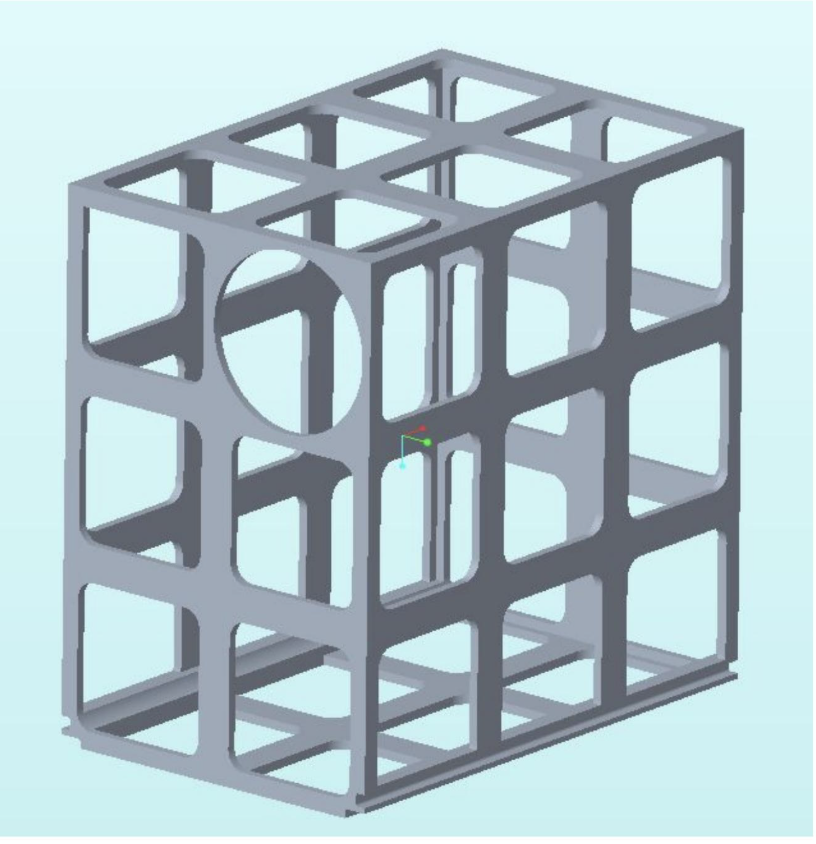
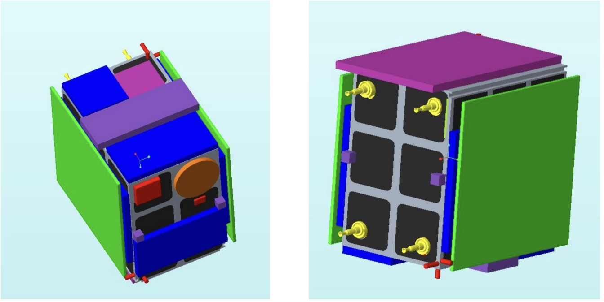
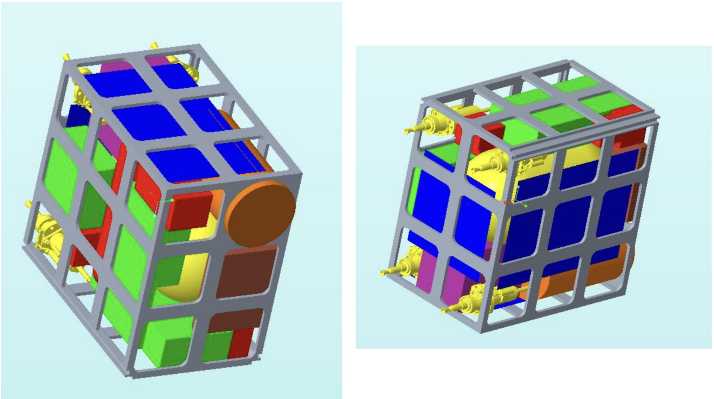
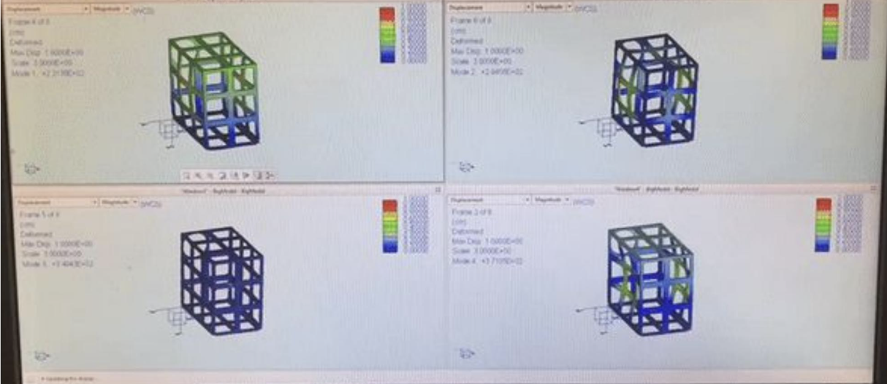

Mission Overview
As part of my Space System Design class at Princeton, I led the structures and materials section for Team COSMIC, designing a mission to deploy 12 satellites for complete optical coverage of the moon. The mission utilized Lagrange points and strategic orbital mechanics to achieve optimal satellite positioning.
The team presented our comprehensive mission plans to NASA engineers at Goddard Space Flight Center, receiving positive feedback and recognition for the work accomplished in a single semester.
Mission Architecture
Why 12 Satellites?
Complete optical coverage of the moon requires careful consideration of orbital mechanics, viewing angles, and resolution requirements. Twelve satellites distributed across strategic orbits and Lagrange points provided the minimum configuration to achieve comprehensive coverage while maintaining system reliability through redundancy.
Lagrange Points & Orbital Mechanics
We leveraged Earth-Moon Lagrange points (L1, L2, L4, L5) to position satellites for optimal viewing angles. These strategic locations provide stable orbital positions while minimizing fuel requirements for station-keeping.
Structural Design
As the structures and materials lead, I designed the satellite chassis to handle multiple competing requirements:
Design Requirements
- • Structural integrity: Withstand launch loads and orbital stresses
- • Mass optimization: Minimize weight to maximize payload capacity
- • Volume constraints: Meet dimensional requirements for launch vehicle integration
- • Environmental protection: Shield payload from space radiation
Materials Selection
I selected materials based on performance, mass, and environmental requirements:
Aluminum 7075 - Structural Frame
Chosen for the primary structural elements. This high-strength aerospace alloy provides excellent strength-to-weight ratio and outstanding stress resistance.
Critical Requirement: The material selection was constrained by the requirement to connect to the launch vehicle, which specified Al 7075 for compatibility with existing interfaces.
Carbon Fiber - Closeout Panels
Selected for the satellite closeout panels to provide radiation attenuation. Carbon fiber composites offer excellent specific strength and act as an effective radiation shield, protecting sensitive electronics and payloads from space radiation while maintaining low mass.
Engineering Analysis
We performed comprehensive engineering analysis to validate the design:
Von Mises Stress Analysis
We simulated Von Mises stresses across the structure under worst-case loading conditions, including launch vibrations and orbital operations. This analysis validated that stress levels remained well below material yield strength with appropriate safety margins.
Modal Frequency Analysis
Modal analysis determined the natural frequencies of the satellite structure. This ensured that structural modes would not couple with launch vehicle dynamics, preventing resonant vibrations that could damage the satellite or payload.
Mass & Volume Budget Management
Managing the tight mass and volume budget required constant negotiation and optimization across multiple subsystems:
- • Propulsion: Allocated fuel mass for orbital insertion and station-keeping
- • Communications: Antenna and radio equipment allocation
- • Power: Solar panel area and battery mass budgets
- • Payload: Optical imaging equipment and data storage
This cross-functional coordination taught me the importance of systems thinking and the art of compromise in multidisciplinary engineering projects.
NASA Goddard Presentation
Our team presented the complete mission design to NASA engineers at Goddard Space Flight Center. The presentation covered:
- • Mission architecture and orbital strategy
- • Structural design and materials rationale
- • Engineering analysis and validation results
- • Mass and volume budgets across all subsystems
The NASA engineers gave positive feedback and were impressed with the level of engineering rigor and coordination we achieved in a single semester course. This validation confirmed that our systematic approach and attention to detail produced professional-grade mission design work.
Mission Design Visualizations

Mission Overview

Satellite Frame Structure

Exterior Configuration

Interior Assembly Layout

Modal Frequency Analysis - Four Vibration Modes